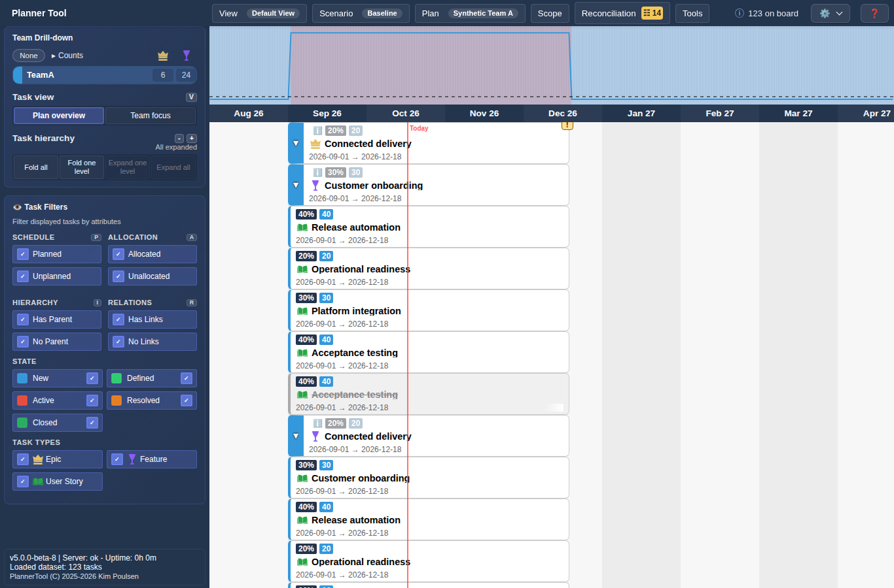
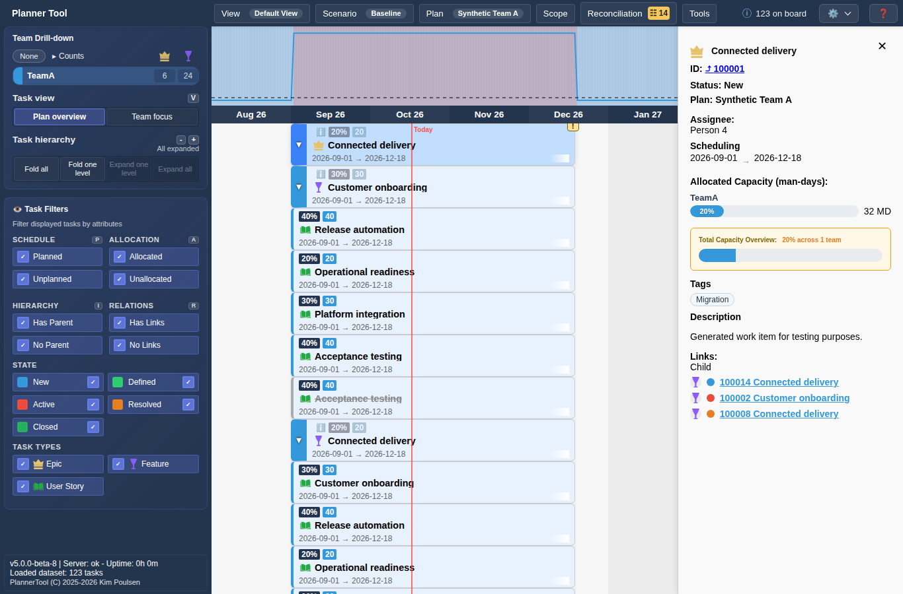
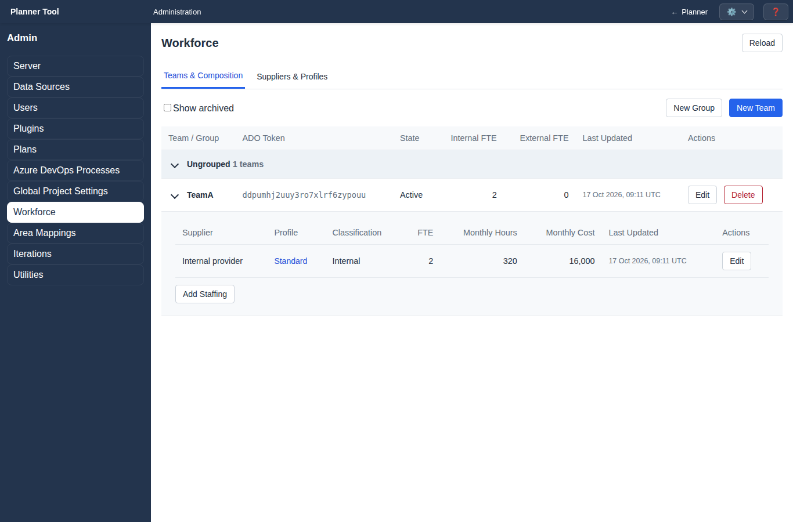
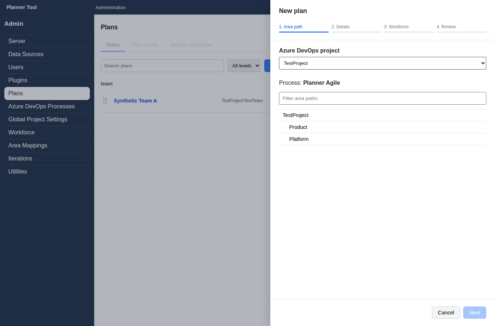

A major update to planning and administration
PlannerTool v5.0.0
See the bigger picture. Follow the work into the details. Plan with clearer effort, capacity and cost, and give administrators the controls to keep it all connected.
Version 5 brings richer cross-plan context, more precise allocation editing, a unified Workforce workspace and a redesigned Plans setup. It also introduces browser enrollment: read the short access guide below before you begin.
For everyone
A new way to access your account
- Enter your own work email. First enrollment asks for your real name; an already enrolled account asks for its current account key.
- If requested, enter your Azure DevOps personal access token (PAT). Your PAT and your PlannerTool account key are different credentials.
- Save the newly displayed account key in a password manager, confirm it is saved, and continue.
Enrollment remembers this browser. Enrolling another browser consumes your current account key and issues a replacement, without revoking other enrolled browsers. Always keep the latest key.
Read the permanent enrollment and account-access guide. The ? in Enrollment opens the same guide whenever you need it.
For planners, product owners and project managers
Keep context. Find focus.
Work does not stop at the edge of a plan. V5 connects eligible ancestors and related work across plans, making the surrounding hierarchy visible without turning every context item into part of your plan's financial scope.

The whole plan, or your team's work
Plan overview keeps the scoped tree together. Team focus follows selected-team allocations, their connecting ancestors and relevant unallocated descendants. Empty swimlanes get out of the way.
Counts you can follow
The board information menu explains how plan totals, shared work, scope and display filters lead to the cards you see. Plan and team menus use hierarchy-ordered counts for quicker scanning.
Faster ways through the board
One-level hierarchy controls, mnemonic keyboard shortcuts and clearer filter cycles make repeated navigation lighter. Shortcuts can be disabled in browser preferences.
Inspection stays inspection
Read-only scenarios keep task details and navigation available while protecting task, group and plugin edits. Make an editable copy when you want to explore changes.
Plan effort in the units that make sense
Choose percentages or whole man-days for allocation editing. Fractional percentages remain precise behind the display, and scheduling edits preserve effort where applicable. Resizes that would exceed 100% are rejected with an explanation, without losing allocations or changing dates.

Capacity and cost tell the same story
For dated work, the lowest-level allocation takes precedence for each team, aligning capacity and cost calculations. Unplanned work adds no scheduled load or cost. Cost reports keep allocating hidden levels as context, respect report date ranges and expose missing pricing inputs rather than pretending a forecast is complete.
Less waiting. Fewer interruptions.
Complete shared task snapshots appear immediately while refresh runs in the background. Refresh does not discard a complete snapshot first. Failures and refresh feedback go to the notification log, keeping the board available for inspection.
For administrators and delegated maintainers
One workforce. Explicit plans.
Administration now shares the planner header and offers permission-aware navigation. Delegate Plans, workforce teams and staffing, supplier and cost maintenance, or iterations independently; the server enforces those write boundaries.

Workforce, brought together
Maintain anonymous staffing composition, fractional FTEs, suppliers and pricing profiles without switching between the old Teams, People and Cost screens. Review impacted staffing when changing supplier/profile definitions.
Safer lifecycle management
Archive and restore plans or teams. When deletion is appropriate, team impact review and confirmed staffing deletion make the consequences explicit. Revision checks reject stale edits.
Plans setup, redesigned
Create and edit plans in dedicated drawers. Browse ADO project areas, select eligible work types, choose a closed-work history window and load the plan's data, with retry when needed.
Process-aware display configuration
The ADO process catalogue replaces scattered type/state settings. Used types are protected; process-qualified display tiers keep different ADO processes distinct.

Portable workforce data and clearer access management
Export workforce YAML and review additive imports with explicit conflict decisions. Full logical backups include paired canonical workforce data and validate schema compatibility before restore. Users can inspect and revoke remembered browsers; administrators can reset account access.
Keep this page close
Release notes remain available from Help. Continuing from the first-update reader records v5.0.0 as read on your account, across enrolled browsers. It does not remove this documentation or the enrollment help.